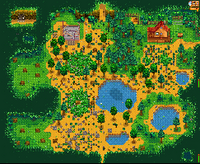
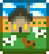

La zone de sélection des cartes lors de la création du personnage.
Il y a huit cartes de ferme à choisir dans Stardew Valley. Chaque carte offre une disposition unique à la ferme, offrant différents avantages et favorisant des compétences spécifiques. Une seule carte peut être choisie au début d'une nouvelle partie, et il n'est plus possible de la modifier une fois sélectionnée.
La Ferme standard offre le plus d'espace pour planter vos plants et élever vos Animaux. Les sept autres fermes ont moins de superficie agricole, mais elles offrent des avantages particuliers :
- La Ferme standard encourage la compétence agriculture.
- La Ferme forestière encourage la compétence cueillette.
- La Ferme des collines encourage l'extraction minière.
- La Ferme de rivière encourage la compétence pêche.
- La Ferme en région sauvage encourage la compétence Combat.
- La Ferme en quatre parcelles offre certains atouts des autres cartes et encourage le Multijoueur.
- La Ferme de plage offre des items supplémentaires et encourage la pêche et la cueillette, mais dissuade de l'agriculture une fois la partie bien avancée.
- La Ferme des champs de prés encourage la compétence agriculture, plus spécifiquement l'élevage d'animaux, et contient deux Poules par défaut.
L'intérieur de la maison est décoré en fonction du thème choisi. Cela comprend les meubles, le papier peint et le revêtement de sol. L'extérieur de la maison a la même apparence quel que soit le choix de départ.
Il y a sur toutes les cartes un bâtiment abandonné qui pourra plus tard être rénové et devenir votre serre. Une fois réparé, il peut être déplacé en visitant la scierie ou la tour du sorcier.
Types de cartes
| Nom
|
Carte
|
Description
|
Compétence associée
|

Ferme standard
|

|
- La majeure partie de cette carte est orientée agriculture et élevage d'animaux.
- Le nombre de cases cultivables sur cette carte est de 3427, avec 235 autres cases où l'on ne peut que construire et pas cultiver.
- La plus grande surface rectangulaire contiguë est de 63 x 31 (1953) cases.
|
 Agriculture Agriculture
|

Ferme de rivière
|

|
- L'eau diminue drastiquement la superficie des terres cultivables.
- Les joueurs débutent avec un Fumoir à poisson.
- Le Fumoir à poisson aide grandement pour générer des revenus en début de partie, ce qui fait de cette ferme la plus facile pour débuter si vous aimez pêcher.
- La majeure partie de cette carte est recouverte d'eau. La compétence pêche est viable dans cette ferme.[1]
- Les joueurs peuvent attraper des poissons qui se trouvent habituellement dans la rivière de Pélican Ville (70% du temps) ou dans l'étang de la Forêt Sève-Cendreuse (30% du temps).
- Contrairement aux autres fermes, les Bulles aléatoires sont activées sur cette carte.
- La rivière entourant la ferme est assez large pour offrir des zones de pêche maximales, ce qui permet d'attraper par exemple des Achigan à petite bouche ou Chevesne de qualité iridium, qui sont de bonnes sources d'énergie pour débuter.
- Les jours pluvieux en printemps et en été vous pourrez attraper des Poisson-chat qui offrent de bons revenus une fois vendus. Le Fumoir à poisson peut être utilisé pour augmenter ces revenus.
- Le nombre de cases cultivables sur cette carte est de 1578, avec 516 autres cases où l'on ne peut que construire et pas cultiver.
|
 Pêche Pêche
|

Ferme forestière
|

|
- Le bord de la ferme est constitué d'arbres et de feuillages, comme dans la Forêt secrète.
- De nombreux buissons se trouvent sur cette carte, y compris des buissons de baies.
- Les clairières à l'ouest font revenir chaque jour 8 grosses souches. Il y a également des objets de cueillettes saisonniers, et des mauvaises herbes uniques laissant toujours tomber des mélanges de graines. Les objets de cueillettes saisonniers sont :
- 5% du temps (modifié par la chance du jour), le joueur attrapera un poisson de forêt.
- 45% du temps restant, le joueur attrapera des poissons d'étang comme ceux trouvés dans la Forêt Sève-Cendreuse.
- Le reste du temps, le joueur attrapera uniquement des déchets.
- Des étangs et des surfaces gazonnées supplémentaires diminuent la surface agricole totale.
- Le nombre de cases cultivables sur cette carte est de 1413, avec 1490 autres cases où l'on ne peut que construire et pas cultiver.
|
 Cueillette Cueillette
|

Ferme des collines
|

|
- Au sommet sud-ouest de la colline se trouvent des pierres, des nodules de minerai et des nodules à géodes, tout ceci dépendant du niveau de compétence d'extraction minière du joueur. Si la carrière de la ferme est nettoyée, elle régénère généralement 7 à 13 éléments tous les 4 jours, ce qui semble être le jour optimal pour nettoyer la carrière de la ferme. La zone minière peut parfois être bloquée par de grosses souches, de grosses bûches ou un bloc rocheux, rendant l'accès impossible tant que le joueur n'a pas le bon outil.
- Les falaises et le ruisseau supplémentaires diminuent la superficie totale de la zone agricole.
- Lors de la pêche :[1]
- Le nombre de cases cultivables sur cette carte est de 1648, avec 930 autres cases où l'on ne peut que construire et pas cultiver.
|
 Extraction minière Extraction minière
|

Ferme en région sauvage
|

|
- Des monstres apparaissent la nuit (leur niveau dépend du niveau de compétence Combat du joueur). Les golems sauvages sont uniques à cette carte, seulement si on choisit de désactiver l'apparition des monstres dans les autres cartes. Voir la page Options pour plus d'infos.
- Lors de la pêche :[1]
- 35% du temps, le joueur pêchera les poissons trouvables dans le lac de la montagne.
- 65% du temps, le joueur pêchera uniquement des déchets.
- Les falaises et les étangs supplémentaires réduisent la superficie totale de la zone agricole.
- Le nombre de cases cultivables sur cette carte est de 2131, avec 444 autres cases où l'on ne peut que construire et pas cultiver.
|
 Combat Combat
|

Ferme en quatre parcelles
|

|
- L'espace exploitable est séparé en quatre plateaux (d'où les quatre parcelles), chacun rappelant une autre carte de ferme. La carte est donc organisée pour le multijoueur mais il reste possible d'en profiter seul.
- En haut à gauche: La ferme forestière. Cette partie de la carte présente une petite zone herbeuse contenant une Grande souche.
- En haut à droite: La ferme standard. Cette partie présente l'espace cultivable le plus large. C'est là où se situe la ferme principale.
- En bas à gauche: La ferme de rivière. On y trouve un étang où le joueur peut pêcher (50% du temps) les poissons pouvant être trouvés dans la Forêt Sève-Cendreuse, et avec le reste du temps des déchets.[1]
- En bas à droite: La ferme des collines. Ici se trouve une petite carrière où apparaissent des rochers et des Nœuds de géode selon le niveau d'extraction minière du joueur.
- Les hauteurs et étangs additionnels réduisent l'espace exploitable.
- Le nombre de cases cultivables sur cette carte est de 2952.
|
Multijoueur
|

Ferme de plage
|

|
- Bien pour la pêche et la cueillette, des tonnes d'espaces exploitables. Parfois, des Caisses d’approvisionnement s'échouent sur le rivage.
- Les objets de la cueillette de la forêt et de la plage peuvent apparaître.
- Les arroseurs ne fonctionnent pas dans le sable.
- Destiné aux "joueurs chevronnés", et non à une première ferme.
- Le nombre de cases cultivables sur cette carte est de 2700, avec 1928 autres cases où l'on ne peut que construire et pas cultiver.
- Il y a un endroit avec 202 cases (10x20+2) où les arroseurs peuvent être posés.
- 15% du temps, le joueur va attraper des algues.
- 5,1% du temps, le joueur va attraper des huîtres, coraux, moules, ou coques. La chance pour ces 4 objets est la même.
- 52,73% du temps, le joueur va attraper des poissons d'océans, poissons qui sont trouvés dans la plage.
- Le reste du temps, le joueur attrapera des déchets.
|
Cueillette Pêche
|

Ferme des champs de prés
|

|
|
Agriculture
|
Onglet Carte
La galerie ci-dessous montre l'apparence des différentes fermes dans l'onglet de Carte du menu du joueur.
Ferme en quatre parcelles
Références
- ↑ 1,0 1,1 1,2 1,3 1,4 1,5 et 1,6 Les poissons pouvant être pêchés sur chaque type de ferme sont déterminés dans le fichier du jeu Content\Locations.xnb.
Historique
- 1.0 : Introduction d'une carte de ferme standard.
- 1.1 : Ajout des cartes forestière, des collines, de rivière et en région sauvage.
- 1.4 : Ajout de la carte Ferme en quatre parcelles.
- 1.5 : Ajout de la carte Ferme de plage. La Serre peut maintenant être déplacée.
- 1.6 : Ajout de la carte Ferme des champs de prés. La Ferme de rivière contient un Fumoir à poisson par défaut. Les monstres donnent maintenant 1/3 d'expérience de Combat lorsqu'ils apparaissent sur la Ferme.